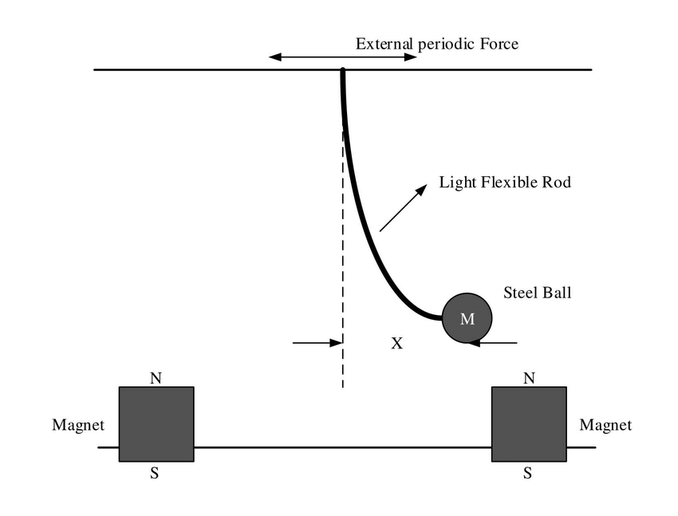

Tyler Jones
University of Wisconsin-Madison
MATLAB Files
The driven Duffing equation is a non-linear second-order ordinary differential equation used to model damped and driven oscillators in engineering and physics. The full non-homogeneous equation is given by: $$ \ddot{x} + \delta\dot{x} + \alpha x + \beta x^{3}=\gamma \cos(\omega t) $$
We note that the solution \(x = x(t)\) is the displacement, \(\dot{x}\) is the velocity, and \(\ddot{x}\) is the acceleration. The respective constants are as follows: \(\alpha\rightarrow \) coefficient of linear damping, \(\beta\rightarrow \) coefficient of cubic damping, \(\gamma\rightarrow \) amplitude of external driving force, \(\omega\rightarrow \) angular frequency of external driving force, and \(\delta\rightarrow \) coefficient of velocity damping. To analyze this equation, we will rewrite the Duffing equation as a first order system of ordinary differential equations as follows. $$ \begin{cases} \dot{x} = v\\ \dot{v} = \gamma \cos(\phi) - \delta\dot{x} - \alpha x - \beta x^{3}\\ \dot{\phi} = \omega\\ \end{cases} $$
Before numerically solving for the equations of motion, analyzing the phase space, and plotting the Poincare map, we will define the energy of our system as follows: $$ E := T + V = \frac{1}{2}|v|^2 + \frac{1}{2}\alpha x^2 + \frac{1}{4}\beta x^{4} $$ where we recall the total energy is the sum of the kinetic and potential energy. Note that the potential is the integral of the forcing function over displacement. Lastly, the paramters held constant are as follows: \(\alpha = -1 \), \(\beta = \frac{1}{4} \), \(\delta = \frac{1}{10} \), \(\gamma = \frac{5}{2} \).
The animation above illustrates the dynamic behavior of the energy surface and energy contour over a finite time span. By plotting the energy surface, we visually depict how the total energy of the system evolves over time in response to the characteristic driving force. Notably, the energy surface oscillates under the influence of the driving force, displaying the system's response to external perturbations. Note that the white contour lines represent the intersection of the energy surface with the null set. This oscillatory behavior is further highlighted by the contours of constant energy, offering insights into the system's energy landscape and its temporal evolution.
In this animation, we numerically solve the equations of motion for the driven Duffing equation using arbitrary initial conditions. The trajectory of the solution in phase space, along with its corresponding time series, is depicted. The chaotic nature of the system is evident from the erratic trajectory, emphasizing the complex dynamics inherent in the driven Duffing equation. This chaotic behavior motivates our subsequent analysis, where we aim to explore the system's behavior through the lens of a Poincaré map.
Here, we present the Poincaré section obtained from the evolving values of the phase angle \(\phi \). The Poincaré map provides a valuable tool for uncovering underlying trajectory patterns in the phase space of the driven Duffing equation. By capturing the system's behavior at specific instances in time, we gain insights into its long-term dynamics and stability properties. The folding pattern observed in the Poincaré section reveals intricate structures in the phase space, shedding light on the system's nonlinear behavior and its sensitivity to initial conditions.
Finally, the above simulation offers a three-dimensional visualization of how we slice through different values of \(\phi \) to construct the Poincaré section. This perspective provides a deeper understanding of how the Poincaré map captures the system's dynamics by sampling its trajectory at discrete intervals of the phase angle. By visualizing the slicing process, we gain further insight into the geometric properties of the Poincaré section and its relevance in characterizing the driven Duffing equation's behavior.